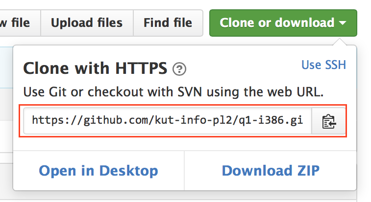

グループ用GitHubリポジトリの作成
やること:
- グループ用assignmentをacceptして，グループ用リモートリポジトリをGitHub上に作る。
- 「git clone」でメンバー各自のローカルリポジトリを作る。
- gitコマンドの初期設定をする。
- （作業コピー上でプログラム作成）
- 編集結果をローカルリポジトリにコミット。
- リモートリポジトリにpush（自分の編集結果をリモートリポジトリに送る）。
- （必要に応じ，他のメンバーの編集結果をpull）
準備作業と開発作業に分かれている:
- 1〜3は準備作業: このページで説明する。
- 4〜7は開発作業: 次の「Gitを使った開発作業」で説明する。
参考資料:
オンラインマニュアル:
git help コマンド名（例えばgit help commit）または
man git-コマンド名（例えばman git-commit）
1. グループ用リポジトリの作成
- 2人以上3人以下のグループを決める。チーム名（英数字列）を決める。
- 代表者1名が下記のURLを開き，「Create a new team」欄にチーム名を入力して「＋Create team」ボタンを選択する。
https://classroom.github.com/group-assignment-invitations/06ea9fdb914467bf4f9a3c3b6d38ca86 - 他のメンバーも上記URLを開き，「Join an existing team」欄のチームから自分のチームを探し，「Join」を押す。
2. ローカルリポジトリの作成 (clone)
以下の作業はメンバー全員がそれぞれ行う。
- GitHub上の上記で作成された自チームのリポジトリを開き，上下中央付近，右端付近の「Clone or download」ボタン（下図の赤枠）を押す。
表示される小ウィンドウの中央付近のURL（下図の赤枠）の「clone用URL」を確認する（チームごとに異なる。表示枠の右にもURLが続いているので注意）。
 - 端末にて，
git clone clone用URLを実行する（新規ディレクトリを作ってその中で実行することをお奨めする）。ただし，下記のように「github.com」の前に「ユーザ名@」（GitHubのユーザ名）を追加すること。途中，GitHubパスワードの入力を要求されるので，入力する。$ mkdir git -- 新規ディレクトリを作る $ cd git $ git clone https://ユーザ名@github.com/kut-info-pl2/q1-i386-チーム名.git Initialized empty Git repository in /home/.../git/q1-i386-team135/.git/ remote: Counting objects: 14, done. remote: Compressing objects: 100% (10/10), done. remote: Total 14 (delta 3), reused 7 (delta 1), pack-reused 0 Unpacking objects: 100% (14/14), done. $ cd q1-i386-チーム名 -- 作業コピーにcdする $ ls README.md chap2 -- 作業コピー中のファイルとディレクトリ $ ls -aF ./ .git/ README.md ../ .gitignore chap2/
q1-i386-チーム名というディレクトリの中に作業コピーが取り出される。このディレクトリの中の .git という隠しディレクトリが実はローカルリポジトリだ（.git の中はいじらない方がよい）。
用語
- リモートリポジトリ … Gitサーバ（この授業ではGitHub）上にあるリポジトリ。チームで共有。
- ローカルリポジトリ … 各自のコンピュータ上にあるリポジトリ。（この授業では）リモートリポジトリをclone（複製）して作る。編集結果はまず自分のローカルリポジトリにコミット (commit) し，その後，リモートリポジトリにpush（送信）する。
- 作業コピー … ローカルリポジトリから取り出したファイルのコピー一式。編集作業は作業コピーに対して行う。
3. Gitコマンドの初期設定
GitHubに登録したユーザ名と電子メールアドレスをGitに設定する（設定しないとコミットできない）。
$ git config --global user.name ユーザ名
$ git config --global user.email メールアドレス- 参考：Pro Git bookの1.6節の「個人の識別情報」の項
下記は必須ではないが，設定を推奨する（以降，この設定がされているものとして説明する）。
$ git config --global push.default current